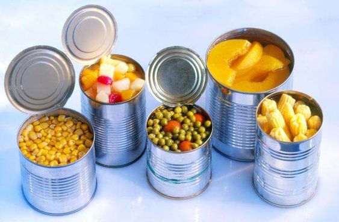

Penting untuk diingat bahwa rekomendasi diet untuk penderita Penyakit Ginjal Kronis (CKD) dapat bervariasi tergantung pada tingkat keparahan CKD, kondisi kesehatan umum, dan faktor-faktor lain. Sebaiknya, penderita CKD berkonsultasi dengan dokter atau ahli gizi untuk mendapatkan rencana diet yang sesuai dengan kebutuhan mereka. Berikut adalah panduan umum mengenai makanan yang bisa dan tidak bisa dikonsumsi penderita CKD.
Makanan berperan penting untuk memperbaiki fungsi ginjal, dengan mengatur pola makan yang tepat organ ini tidak tambah rusak. Penderita gagal ginjal butuh memperoleh asupan vitamin, protein, mineral dan kalori yang seimbang serta membatasi konsumsi makanan tertentu. Untuk penderita penyakit gagal ginjal kronis stadium awal masih mempunyai keleluasaan saat memilih asupan. Tetapi untuk penderita yang sudah masuk ke tahap stadium akhir perlu hati-hati dalam memasukkan makanan dan minuman. Berikut jenis makanan yang bisa memperbaiki fungsi ginjal agar tidak bertambah parah.
Menu Makanan Penderita Gagal Ginjal yang Baik
Makanan berperan penting untuk memperbaiki fungsi ginjal, dengan mengatur pola makan yang tepat organ ini tidak tambah rusak. Penderita gagal ginjal butuh memperoleh asupan vitamin, protein, mineral dan kalori yang seimbang serta membatasi konsumsi makanan tertentu. Untuk penderita penyakit gagal ginjal kronis stadium awal masih mempunyai keleluasaan saat memilih asupan. Tetapi untuk penderita yang sudah masuk ke tahap stadium akhir perlu hati-hati dalam memasukkan makanan dan minuman. Berikut jenis makanan yang bisa memperbaiki fungsi ginjal agar tidak bertambah parah.
 |
Kembang Kol Sayuran yang menyimpan zat sangat baik untuk ginjal. Mulai dari vitamin K, vitamin C dan folat. Kandungan serat pada kembang kol juga tinggi. Sementara dalam 124 gram kembang kol mengandung 19 MG sodium, 40 mg fosfor dan 176 MG kalium. |
 |
Ikan Kakap Putih Ikan kakap putih mempunyai asam lemak omega-3 yang berlimpah. Sebuah penelitian mengatakan omega-3 bisa mengurangi risiko terjadinya gagal ginjal stadium akhir. Dibandingkan dengan ikan lain kandungan fosfor pada ikan kakap putih cukup rendah. |
Maka dari itu, ikan ini bisa disertakan dalam menu makanan penderita gagal ginjal. Walaupun Anda harus memperhatikan porsi supaya tidak terlalu banyak. Karena dalam 85 gram ikan kakap putih yang sudah dimasak mempunyai 74 MG sodium, 211 MG fosfor dan 279 MG kalium.
| Buah Anggur Merah Buah anggur yang memiliki warna merah bisa dikonsumsi secara rutin oleh penderita gagal ginjal. Tidak hanya tinggi vitamin buah ini juga kaya akan antioksidan. Salah satu antioksidan pada anggur merah adalah Resveratrol, yang memiliki manfaat untuk kesehatan jantung. Dalam 75 gram buah ini mengandung 15 MG fosfor, 144 MG kalium dan 1,5 MG sodium. |
|
 |
Putih Telur Putih telur merupakan makanan yang tepat untuk pengidap gagal ginjal dibandingkan kuning telur yang mempunyai fosfor tinggi. Kandungan protein pada putih telur sangat dibutuhkan untuk penderita gagal ginjal yang menjalani dialisis. Karena proses cuci darah bisa membuang protein dari darah. Dua putih telur yang memiliki ukuran besar atau sekitar 66 gram mengandung 108 MG kalium dan 110 MG sodium. Tetapi kandungan fosfor yang sangat rendah yaitu 10 mg. |
| Blueberry Antioksidan pada buah blueberry mempunyai peran untuk mencegah penyakit jantung dan kanker. Sangat penting untuk orang yang mempunyai gagal ginjal karena Penyakit ini berhubungan dengan penyakit jantung. Dalam 148 gram blueberry segar mengandung 18 MG fosfor, 114 MG kalium dan 1,5 MG sodium. Angka ini cukup rendah kan? |
|
 |
Bawang Putih Orang yang mempunyai penyakit ginjal sangat disarankan untuk membatasi asupan garam. Bawang putih bisa menjadi pengganti garam yang jauh lebih aman dan tidak kalah enak. Dalam 9 gram bawang putih mengandung 14 MG fosfor, 36 MG kalium dan 1,5 MG sodium. |
| Jamur Shitake Jamur shitake bisa menjadi sumber protein pengganti daging untuk penderita gagal ginjal. Makanan ini mengandung vitamin B, selenium, tembaga dan mangan. Jamur shitake memiliki kandungan kalium yang rendah dibanding dengan jamur portobello. Dalam 145 gram jamur shitake yang sudah dimasak mengandung 42 MG fosfor, 170 MG kalium dan 6 MG sodium. |
|
| Kubis Kubus mempunyai kandungan mineral, vitamin dan serat. Mengonsumsi kubis secara rutin bisa membantu untuk menyehatkan sistem pencernaan dengan melancarkan buang air besar. Karena kubis menjadi menu makanan penderita gagal ginjal yang sehat. Dalam 70 gram sayur Ini mengandung 18 MG fosfor, 116 MG kalium dan 13 MG sodium. |
|
| Kacang Macadamia Kebanyakan kacang mempunyai kandungan fosfor yang tinggi, tetapi berbeda dengan kacang Macadamia. Dalam 28 gram kacang dan Maya mempunyai 53 MG fosfor, 103 MG kalium dan 1,4 MG sodium. |
|
| Minyak Zaitun Minyak zaitun merupakan sumber lemak yang sehat serta bebas fosfor, hal ini membuat pilihan yang bagus untuk penderita penyakit ginjal. Banyak orang yang memiliki penyakit gagal ginjal mengalami kesulitan untuk menjaga berat badan. Dalam minyak zaitun mengandung lemak tak jenuh tunggal yang disebut asam oleat yang memiliki sifat anti-inflamasi. Lemak tak jenuh tunggal sangat stabil pada suhu tinggi, hal ini menjadikan minyak zaitun sebagai pilihan yang sehat untuk memasak. Selain itu minyak zaitun memiliki kalium fosfor dan natrium yang rendah sehingga baik untuk kesehatan. |
Makanan yang Perlu Dihindari Penderita Gagal Ginjal
 |
Buah Alpukat Karena alpukat merupakan sumber kalium yang tinggi penderita penyakit ginjal tidak diperbolehkan untuk mengkonsumsi buah tersebut. |
| Roti Gandum Utuh Karena roti gandum mempunyai kandungan fosfor serta kalium sebaiknya penderita penyakit ginjal tidak mengkonsumsi dan disarankan untuk memilih roti putih biasa dibandingkan dengan roti gandum. | |
|  | Makanan Kaleng Makanan kaleng mengandung sodium serta natrium yang tinggi, hal ini bisa memperparah kondisi penyakit gagal ginjal. Jadi sebaiknya makanan ini dihindari untuk penderita gagal ginjal. |
| Nasi Merah Sama seperti roti gandum untuk orang sehat roti gandum serta nasi merah sangat bermanfaat. Tetapi untuk penderita penyakit gagal ginjal tidak diperbolehkan mengkonsumsi makanan tersebut. Menu makanan penderita gagal ginjal yang baik adalah nasi putih dibandingkan nasi merah. | |
| Susu Mengkonsumsi susu yang berlebihan atau terlalu banyak bersamaan dengan makanan yang mempunyai fosfor tinggi bisa merusak kesehatan tulang penderita penyakit ginjal. | |
| Pisang Disarankan untuk penderita penyakit ginjal menghindari pisang karena kandungan kalium yang sangat tinggi. | |
| Jeruk atau Jus Jeruk Karena mengandung kalium jeruk yang dimakan langsung, di jus atau dalam kemasan sangat dihindari untuk ginjal yang sehat. | |
| Olahan Daging Daging dikenal bahayanya yang bisa menyebabkan berbagai jenis penyakit kronis. Sehingga tidak ada alasan lain untuk menghindari jenis makanan ini. | |
| Kentang dan Umbi Kentang serta umbi merupakan jenis makanan yang tinggi kalium. Sehingga penderita gagal ginjal harus mengurangi mengkonsumsi makanan ini. | |
 |
Tomat Tomat sangat dikenal sebagai buahan berkalsium tinggi Hal ini sangat jelas tidak sesuai untuk penderita penyakit gagal ginjal. Disarankan untuk menghindari tomat agar ginjal sehat. |